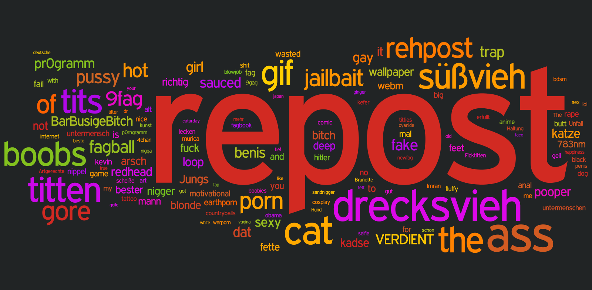

Tagcloud (01/2007 bis 07/2014)
auf pr0gramm

Informationen
- Angezeigt werden die 150 meist genutzten Tags abzüglich
nsfw, nsfl und sfw
- Die Größe eines Tags repräsentiert seine Verwendungshäufigkeit
- Es wurden alle Einträge von 23.01.2007 bis 12.07.2014 berücksichtigt
Methodik
Kritik
- Tags mit Leerzeichen werden getrennt dargestellt (so würde z.B.
Falk der Hurensohn als 3 Tags - Falk, der und Hurensohn - angezeigt)
top